Suka menjelajah alam, mendaki, dan melakukan perjalanan jauh. Dari setiap perjalanan saya belajar untuk tetap berjalan, menghargai proses, dan tidak mudah menyerah.
01
Pelajar XII RPL 1 Pencinta alam Dunia gym Web developer
M. Raja Siyo — Portofolio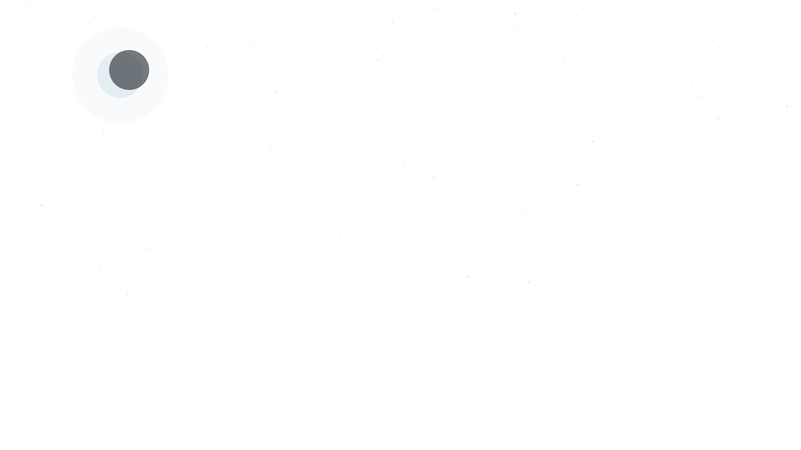

M. Raja Siyo
Pelajar XII RPL 1
Tarik bet namanya, lalu lepas


ABOUT ME
Saya M. Raja Siyo , seorang pelajar kelas XII RPL 1 di sekolah swasta SMK Mandiri .
Saya punya tiga hal yang paling sering saya jalani: pencinta alam, gym, dan web development. Dari alam saya belajar tentang daya tahan dan tidak gampang menyerah. Dari gym saya belajar tentang kekuatan dan konsistensi.
Sedangkan dari web development saya belajar bagaimana membuat sesuatu dari nol, mulai dari tampilan sampai sistem yang bisa digunakan.
ABOUT ME
Hal-hal yang paling sering mengisi waktu dan terus saya kembangkan. Dari setiap prosesnya, saya belajar tentang konsistensi, disiplin, dan bagaimana menjadi versi diri yang lebih baik.
Suka menjelajah alam, mendaki, dan melakukan perjalanan jauh. Dari setiap perjalanan saya belajar untuk tetap berjalan, menghargai proses, dan tidak mudah menyerah.
Suka latihan beban dan terus meningkatkan kekuatan. Salah satu latihan yang saya lakukan adalah rowing dengan beban 20 kg. Gym mengajarkan saya tentang disiplin, konsistensi, dan mental yang kuat.
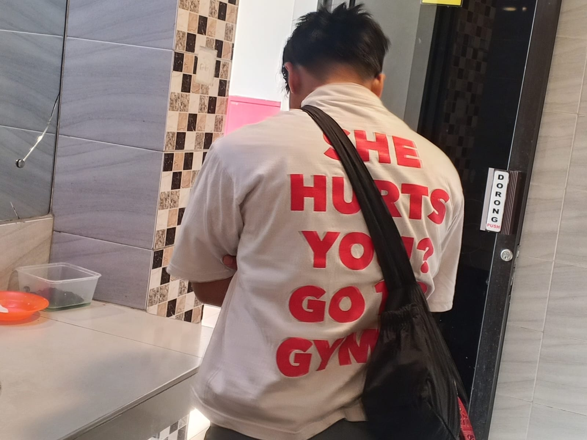
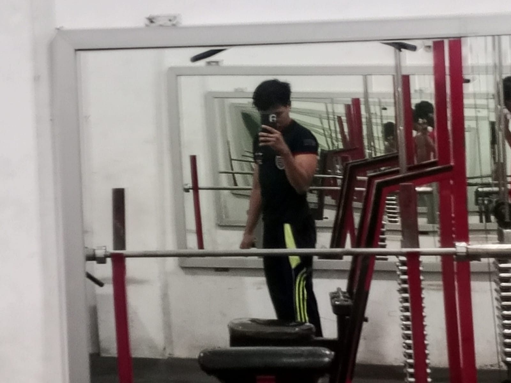
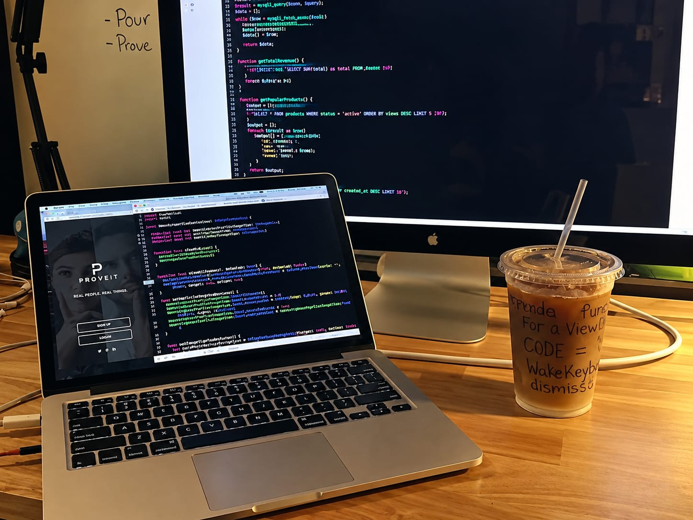
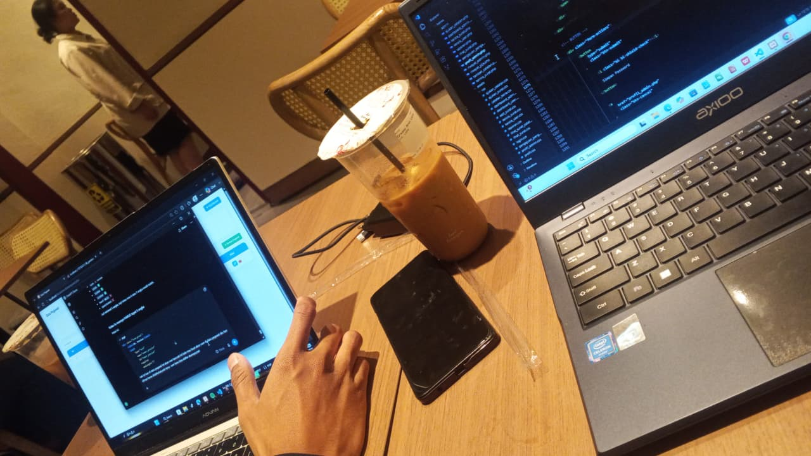
Belajar membuat website dari tampilan sampai sistemnya menggunakan HTML, CSS, JavaScript, PHP, dan MySQL. Saya suka membuat sesuatu dari nol dan melihat hasilnya bisa digunakan.
EXPERIENCE
Sebuah perjalanan yang membentuk cara saya berpikir, melihat dunia, dan terus menjadi versi diri yang lebih baik. Berikut tiga hal yang paling berarti dalam perjalanan saya.
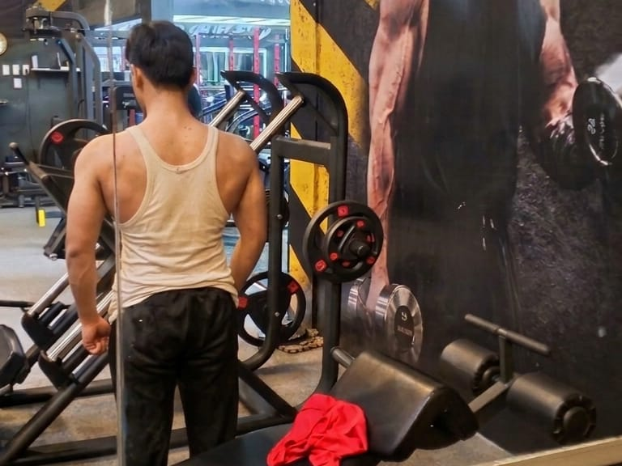
CERITA SAYA
Dari gunung, latihan, sampai baris kode. Setiap pengalaman memberi saya sesuatu untuk dipelajari, dibangun, dan dibawa ke langkah berikutnya.
Jelajahi perjalanan saya →04 / MY JOURNEY
Perjalanan pendidikan saya adalah bagian penting dari siapa saya sekarang.
Dari SD, SMP, hingga memilih RPL di SMK, setiap tempat menjadi bagian dari cerita dan proses saya berkembang.
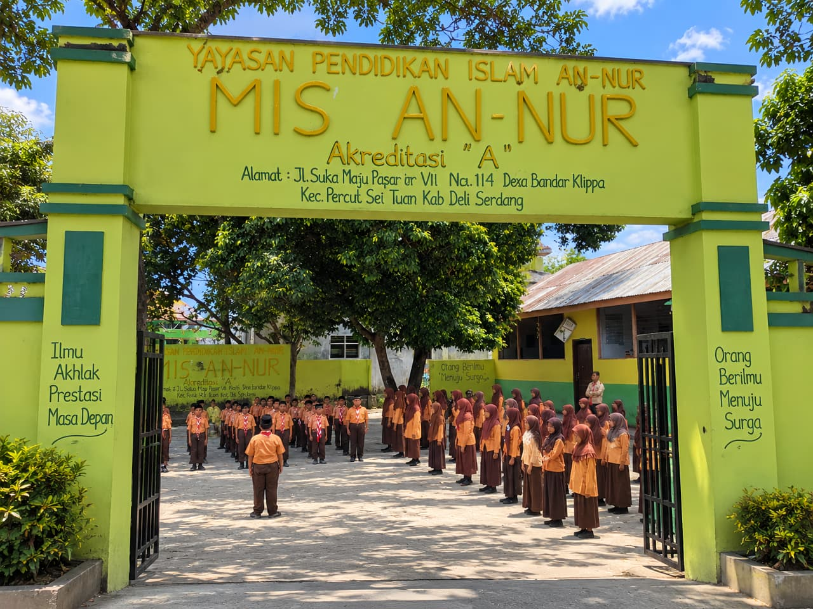
Di sinilah perjalanan pendidikan saya dimulai. Tempat pertama saya belajar, bertemu banyak orang, dan membangun pengalaman pertama.
Website Sekolah ↗Di masa SMP, saya mulai menemukan banyak hal baru, memperluas pergaulan, dan belajar menjadi lebih mandiri.
Website Sekolah ↗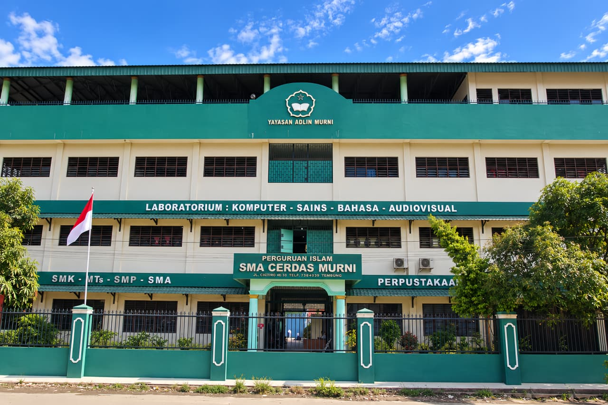
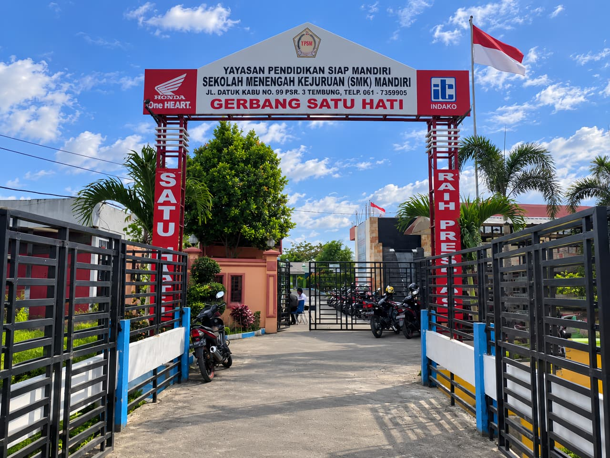
Di SMK saya mulai menemukan arah. Saya mengenal dunia teknologi, coding, dan mulai membuat website sendiri.
Website Sekolah ↗05 / ACHIEVEMENTS
Beberapa pencapaian yang menjadi bagian dari perjalanan saya selama bersekolah.
03 CERTIFICATES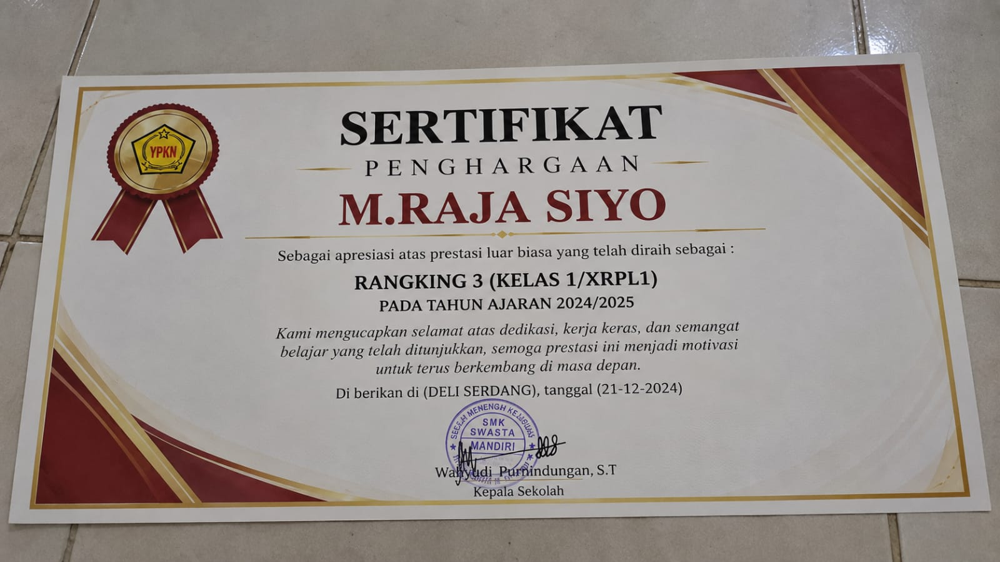
Sertifikat pencapaian saya selama perjalanan pendidikan.
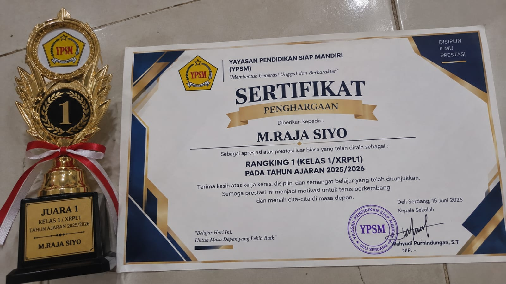
Salah satu pencapaian yang menjadi bagian dari proses saya berkembang.
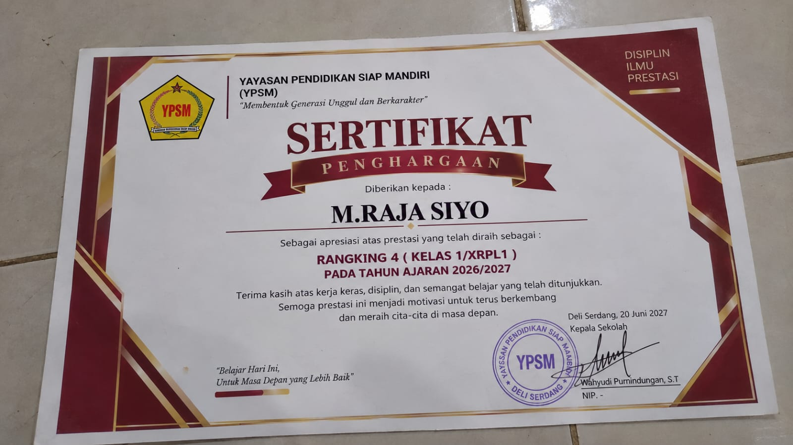
Pencapaian lain yang menjadi bagian dari perjalanan saya di sekolah.
Beberapa website yang pernah saya buat selama belajar web development. Setiap project menjadi bagian dari proses belajar dan pengalaman saya.
07 / CONTACT ME
Punya pertanyaan, ingin ngobrol, atau butuh bantuan membuat website?
Kalau mau nanya atau joki website, langsung DM aja lewat sosial media saya di bawah.
JOKI WEBSITE Website tugas, pribadi, dll
TANYA APAPUN Seputar sekolah, web, dll
COLLABORATION Project, ide, atau lainnya
08 / MY FAV SONG
The 1975